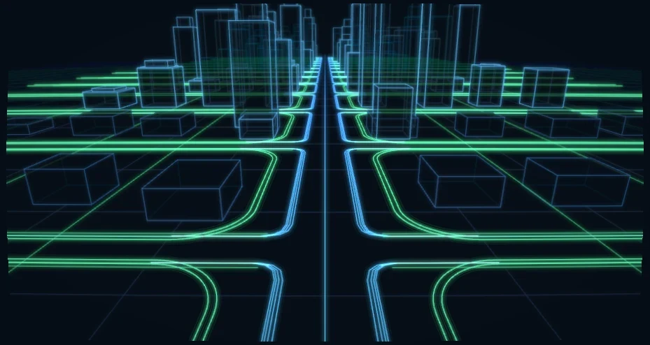

The common signal
Plate archive.
Retired plates from the Wireframe signal atlas.

Loading
Signal avenue
A cobalt boulevard carries a signal through a city of green crossings.
The common signal
Retired plates from the Wireframe signal atlas.

A cobalt boulevard carries a signal through a city of green crossings.